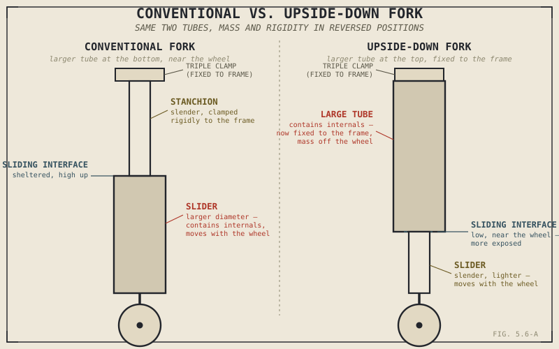

Flip a fork's tubes so the thick part sits on top instead of the bottom, and you've changed more than the bike's silhouette. You've moved mass, changed which part of the assembly actually flexes under load, and shifted a real maintenance consideration to a different, more exposed part of the fork. That single, simple-sounding change — inverting a telescopic fork — is worth a full chapter precisely because it isn't just a styling choice.
Chapter 5.5 covered how much travel a fork provides. This chapter covers how the fork itself is actually built to provide it.
Conventional Forks: Simple, Sheltered, and Heavier Where It Matters
A conventional, or right-side-up, telescopic fork clamps a pair of relatively slender tubes — the stanchions — into the triple clamps at the top, fixed rigidly relative to the frame. A pair of larger-diameter sliders, containing the fork's oil and internal damping components, fit around the bottom of those stanchions and hold the front axle, sliding up and down as the suspension compresses and extends. This is the simpler, historically more common layout, and its sliding interface — where the stanchion meets the slider — sits comparatively sheltered, higher up the assembly, away from the worst of the dirt and water thrown up directly off the front tyre.
The trade is in where the mass sits. The larger, heavier sliders, containing the fork's internals, are the part that moves with the wheel and axle — directly adding to unsprung mass, a concept Chapter 4.8 previewed and Chapter 5.9 will cover in full, but worth flagging here plainly: more mass moving with the wheel rather than isolated by the suspension works against exactly the contact-maintenance job Chapter 5.1 named as suspension's priority.
Upside-Down Forks: Trading Cost and Exposure for Rigidity
An upside-down, or inverted, fork flips this arrangement: the larger-diameter tubes, containing the internals, clamp into the triple clamps at the top, while the slender sliding tubes attach to the axle at the bottom. This produces two genuine engineering advantages at once. First, it reduces unsprung mass, since the lighter sliding tubes, not the heavier tubes housing the internals, are now the part moving with the wheel. Second, anchoring the larger-diameter tubes rigidly in the triple clamps, rather than letting them be the sliding element, meaningfully increases the whole fork assembly's resistance to bending and twisting under hard braking and cornering loads — directly supporting the kind of precise, predictable front-end feedback Chapter 4.9's discussion of torsional rigidity described as genuinely valuable.
Inverting a fork isn't cosmetic. It moves the heavier component off the wheel and onto the frame side of the assembly, and it puts the stiffer tube where rigidity actually matters most — two real engineering payoffs from one geometric flip.

A conventional fork and an upside-down fork shown side by side, with the larger-diameter tube and sliding interface labeled on each, showing the reversed position of mass and rigidity between the two designs.
Neither advantage arrives free. Upside-down forks are generally more expensive to manufacture, and because their sliding interface now sits low, directly in the path of water, dirt, and debris thrown up by the front tyre, seal wear and contamination can become more of an ongoing maintenance concern than on a conventional fork's more sheltered arrangement. This is, once again, a genuine trade rather than a straightforward upgrade — real gains in rigidity and unsprung mass, real costs in price and exposure.
Damping Rods Versus Cartridges, Briefly
Beyond the tubes themselves, how a fork actually achieves the damping Chapter 5.3 described varies significantly in sophistication. Simpler, often older or more budget-oriented forks use damping rods — a comparatively basic internal design forcing oil through largely fixed orifices, which tends to produce damping force that increases sharply and somewhat crudely with velocity rather than being finely controlled across the full range of speeds a suspension actually experiences. Cartridge forks use a separate, more sophisticated internal cartridge with shim-stack valving, allowing damping characteristics to be tuned and, on adjustable units, adjusted far more precisely across that full velocity range — a real quality and cost differentiator that exists entirely inside the fork, independent of whether it's conventional or inverted on the outside.
A Common Misconception, Cleared Up Early
It's tempting to treat upside-down forks as simply a racing-inspired styling choice, present mainly to signal performance intent rather than deliver it. The rigidity and unsprung mass benefits described above are real and measurable, not cosmetic — but so are the added cost and increased seal exposure, which is exactly why plenty of well-engineered, perfectly capable motorcycles still use a conventional fork deliberately, matched to a price point or use case where those specific trade-offs make more sense. An upside-down fork is a genuine engineering choice with real costs, not an unconditional upgrade any bike would automatically benefit from regardless of price or purpose.
Where This Leads
This chapter covered how the front suspension unit is built. The rear suspension solves a related but distinct engineering problem, and does so through genuinely different mechanisms — the mono-shock and linkage systems Chapter 5.7 covers next.
Key Concepts to Remember
- A conventional fork keeps its heavier, internals-containing sliders at the bottom near the axle, sheltering the sliding interface but adding more mass to the wheel side of the assembly.
- An upside-down fork moves the larger tubes to the top, reducing unsprung mass and increasing rigidity by anchoring the stiffer tube rigidly in the triple clamps, at the cost of higher price and a sliding interface more exposed to dirt and water.
- Damping rod forks use simpler, largely fixed internal orifices; cartridge forks use shim-stack valving for more precise, tunable damping — a real quality differentiator independent of conventional-versus-inverted construction.
- Fork type is a genuine engineering trade-off, not a styling choice or an unconditional upgrade — conventional forks remain a legitimate, well-matched choice for many motorcycles and price points.
Cross-References
| ← Ch. 4.8 | First previewed unsprung mass; this chapter shows fork design as a direct, concrete example of that concept in action. |
| ← Ch. 4.9 | Established torsional rigidity's importance under cornering and braking loads; this chapter shows how fork orientation directly affects that same rigidity. |
| ← Ch. 5.3 | Introduced damping in general terms; this chapter shows how damping rod and cartridge designs differ in actually achieving it. |
| → Ch. 5.9 | Will cover unsprung versus sprung mass in full, building directly on the fork mass distribution introduced here. (Not yet published.) |
| → Ch. 5.7 | Covers rear shock and linkage design, the rear suspension's equivalent engineering problem. |